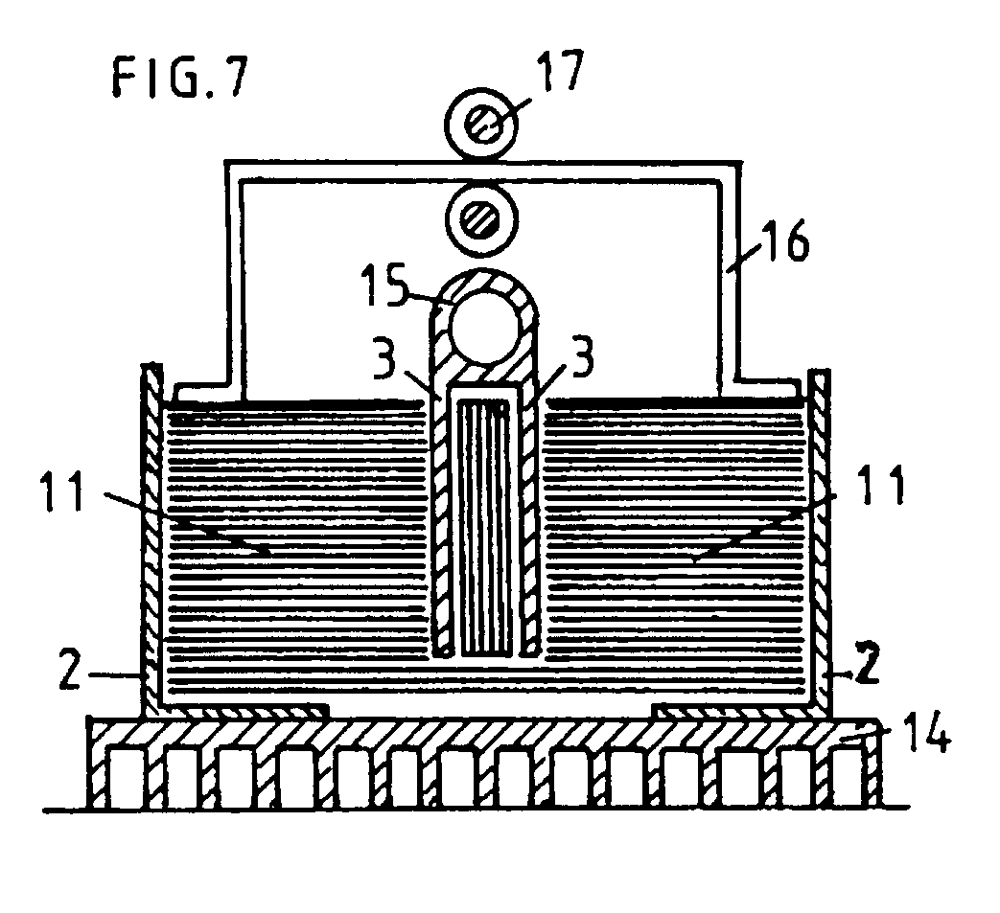

The following is a U.K. Patent Application filed by Harold Aspden on September 2, 1995 with a first publication date of March 6, 1996.
Abstract: An apparatus for generating electricity comprises a laminated stack of ferromagnetic metal 11. The stack is part of a transformer core and an a.c. circulating current is set up in the stack by eddy current induction. A heat gradient is established in the stack by means of heat sinks 14,15. The Nernst effect converts the heat input to an output EMF which is delivered through a secondary winding. laminated rotor sections 19 axially spaced along a supporting spindle 1.
